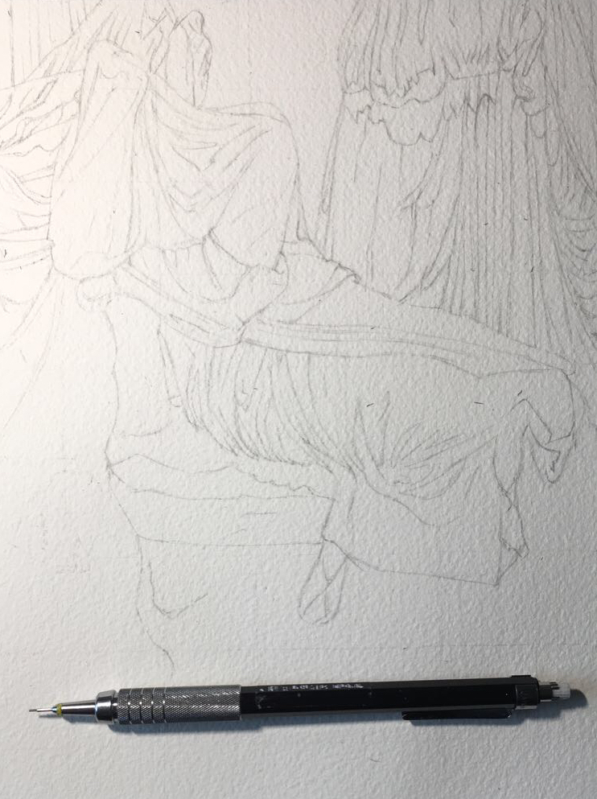
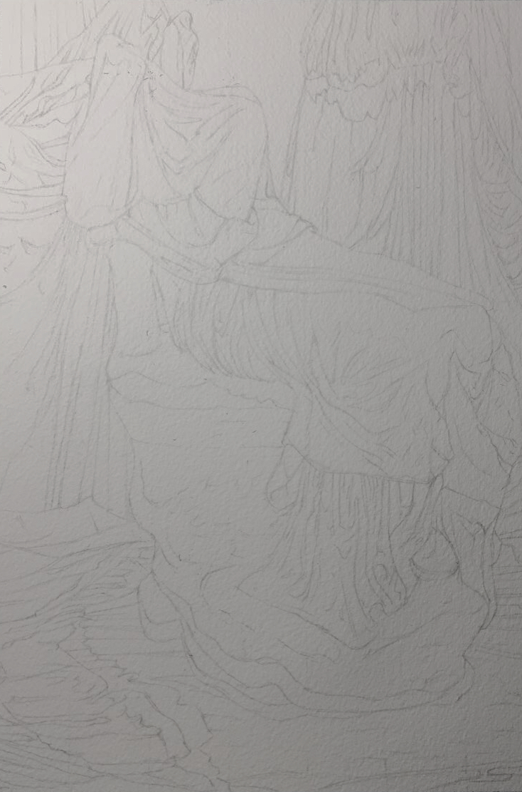
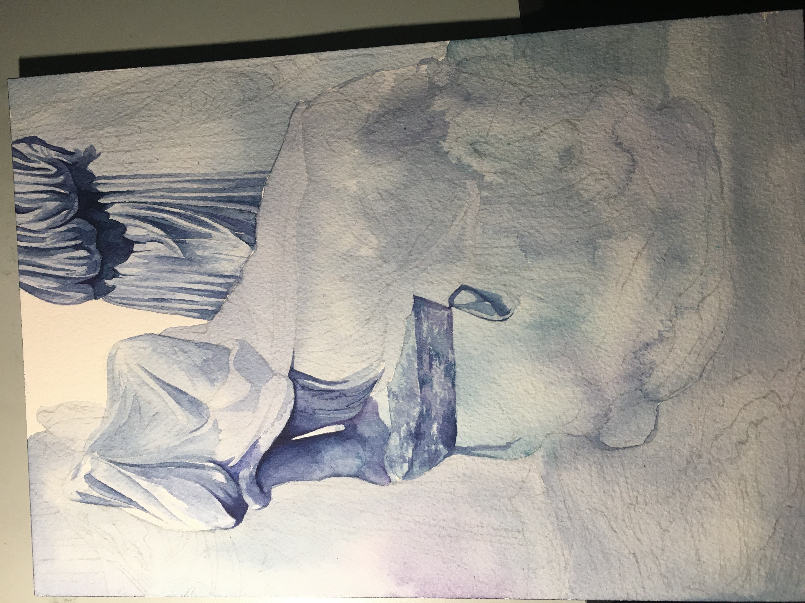

Add a grid so that transfering the drawing is easier (you don't want to erase too much on watercolor paper -- you can't ruin the texture)
Step 3: Pain

Perfectionism will make this step too long-- it can take hours; the worst part is knowing that all the intricate lines in penicl will have to be erased as much as possible so that they dont interfer with the translucent paints...

Step 4: Color

I like blues -- I focused on the colors of bruises for this one *yikes*. Idk why, but I like the solemnness of it... as well as the drama.